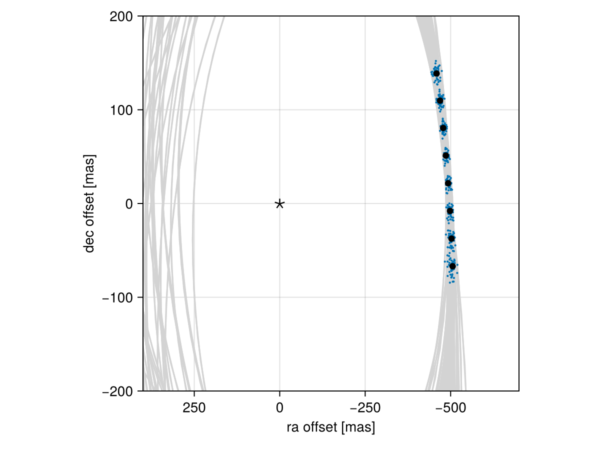

Posterior Predictive Checks
A posterior predictive check compares our true data with simulated data drawn from the posterior. This allows us to evaluate if the model is able to reproduce our observations appropriately. Samples drawn from the posterior predictive distribution should match the locations of the original data.
To demonstrate, we will fit a model to relative astrometry data:
using Octofitter
using Distributions
astrom_dat = Table(
epoch= [50000,50120,50240,50360,50480,50600,50720,50840,],
ra = [-505.764,-502.57,-498.209,-492.678,-485.977,-478.11,-469.08,-458.896,],
dec = [-66.9298,-37.4722,-7.92755,21.6356, 51.1472, 80.5359, 109.729, 138.651,],
σ_ra = fill(10.0, 8),
σ_dec = fill(10.0, 8),
cor = fill(0.0, 8)
)
astrom_obs = PlanetRelAstromObs(astrom_dat, name="simulated astrom")
planet_b = Planet(
name="b",
basis=Visual{KepOrbit},
observations=[astrom_obs],
variables=@variables begin
a ~ truncated(Normal(10, 4), lower=0.1, upper=100)
e ~ Uniform(0.0, 0.5)
i ~ Sine()
ω ~ UniformCircular()
Ω ~ UniformCircular()
θ ~ UniformCircular()
tp = θ_at_epoch_to_tperi(θ,50420; system.M, a, e, i, ω, Ω) # reference epoch for θ. Choose an MJD date near your data.
end
)
sys = System(
name="Tutoria",
companions=[planet_b],
observations=[],
variables=@variables begin
M ~ truncated(Normal(1.2, 0.1), lower=0.1)
plx ~ truncated(Normal(50.0, 0.02), lower=0.1)
end
)
model = Octofitter.LogDensityModel(sys)
using Random
Random.seed!(0)
chain = octofit(model)Chains MCMC chain (1000×28×1 Array{Float64, 3}):
Iterations = 1:1:1000
Number of chains = 1
Samples per chain = 1000
Wall duration = 3.22 seconds
Compute duration = 3.22 seconds
parameters = M, plx, b_a, b_e, b_i, b_ωx, b_ωy, b_Ωx, b_Ωy, b_θx, b_θy, b_ω, b_Ω, b_θ, b_tp
internals = n_steps, is_accept, acceptance_rate, hamiltonian_energy, hamiltonian_energy_error, max_hamiltonian_energy_error, tree_depth, numerical_error, step_size, nom_step_size, is_adapt, loglike, logpost, tree_depth, numerical_error
Summary Statistics
parameters mean std mcse ess_bulk ess_tail rh ⋯
Symbol Float64 Float64 Float64 Float64 Float64 Float ⋯
M 1.1924 0.0935 0.0040 588.7266 677.9194 1.00 ⋯
plx 50.0007 0.0203 0.0007 952.2805 623.9444 0.99 ⋯
b_a 11.5251 2.1491 0.1403 231.0166 545.7530 1.00 ⋯
b_e 0.1535 0.1076 0.0068 265.6160 450.1335 1.01 ⋯
b_i 0.6284 0.1599 0.0113 207.9428 288.3297 1.01 ⋯
b_ωx -0.1192 0.7087 0.0546 193.9737 450.0605 1.00 ⋯
b_ωy -0.1451 0.6878 0.0583 161.9112 486.5532 1.00 ⋯
b_Ωx -0.1199 0.7526 0.1158 52.6201 283.6153 1.01 ⋯
b_Ωy -0.0214 0.6605 0.0847 76.6217 360.1010 0.99 ⋯
b_θx 0.0743 0.0110 0.0004 652.0157 537.2253 1.00 ⋯
b_θy -1.0024 0.1038 0.0043 653.2751 576.9698 1.00 ⋯
b_ω -0.4840 1.8855 0.1293 287.2446 646.4940 0.99 ⋯
b_Ω -0.5066 1.9137 0.2040 144.3534 403.2296 1.01 ⋯
b_θ -1.4968 0.0074 0.0003 842.3123 606.9838 1.00 ⋯
b_tp 43161.8026 4510.0809 316.2607 209.4834 328.5161 0.99 ⋯
2 columns omitted
Quantiles
parameters 2.5% 25.0% 50.0% 75.0% 97.5%
Symbol Float64 Float64 Float64 Float64 Float64
M 1.0185 1.1306 1.1910 1.2544 1.3737
plx 49.9624 49.9864 50.0006 50.0148 50.0422
b_a 8.2648 9.9316 11.1083 12.8788 16.1604
b_e 0.0065 0.0639 0.1364 0.2252 0.3883
b_i 0.2701 0.5289 0.6443 0.7480 0.8928
b_ωx -1.0917 -0.7948 -0.2752 0.5691 1.0366
b_ωy -1.0716 -0.7961 -0.2933 0.4919 1.0202
b_Ωx -1.0792 -0.8411 -0.3095 0.6915 1.0510
b_Ωy -1.0448 -0.6244 -0.0205 0.5716 1.0251
b_θx 0.0535 0.0670 0.0736 0.0815 0.0979
b_θy -1.2028 -1.0697 -0.9953 -0.9342 -0.8115
b_ω -3.0081 -2.1739 -0.8535 1.0225 2.9966
b_Ω -2.9965 -2.3630 -0.0931 0.8915 3.0104
b_θ -1.5112 -1.5018 -1.4969 -1.4915 -1.4827
b_tp 31867.7502 40825.6527 44050.4271 46125.8306 49699.1256
We now have our posterior as approximated by the MCMC chain. Convert these posterior samples into orbit objects:
# Instead of creating orbit objects for all rows in the chain, just pick
# every twentieth row.
ii = 1:20:1000
orbits = Octofitter.construct_elements(model, chain, :b, ii)50-element Vector{Visual{KepOrbit{Float64}, Float64}}:
Visual{KepOrbit{Float64}, Float64}(KepOrbit(11.1, 0.152, 0.687, 1.2, 0.241, 43600.0, 1.2), 49.97857052762739, 4.127064941424772e6)
Visual{KepOrbit{Float64}, Float64}(KepOrbit(10.4, 0.102, 0.683, -1.24, 4.26, 47400.0, 1.17), 50.01200489095114, 4.1243058880932136e6)
Visual{KepOrbit{Float64}, Float64}(KepOrbit(10.8, 0.121, 0.674, -1.09, 4.04, 47400.0, 1.36), 50.01928316505357, 4.123705762964735e6)
Visual{KepOrbit{Float64}, Float64}(KepOrbit(13.8, 0.0242, 0.809, 2.29, 3.61, 36100.0, 1.22), 50.02807361259634, 4.1229811854111026e6)
Visual{KepOrbit{Float64}, Float64}(KepOrbit(10.2, 0.0639, 0.502, 0.723, 0.672, 43900.0, 1.06), 49.964741526170265, 4.128207210659943e6)
Visual{KepOrbit{Float64}, Float64}(KepOrbit(10.4, 0.0581, 0.6, -1.99, 1.4, 40600.0, 1.21), 50.02521913227072, 4.1232164461232154e6)
Visual{KepOrbit{Float64}, Float64}(KepOrbit(11.7, 0.226, 0.608, -2.17, 1.72, 37800.0, 1.05), 50.027985048048144, 4.1229884843252115e6)
Visual{KepOrbit{Float64}, Float64}(KepOrbit(16.4, 0.212, 0.823, 2.6, 3.28, 30600.0, 1.17), 50.02220713023529, 4.1234647185814045e6)
Visual{KepOrbit{Float64}, Float64}(KepOrbit(9.1, 0.189, 0.546, -2.49, 3.97, 45300.0, 1.17), 50.01218652090795, 4.1242909097938733e6)
Visual{KepOrbit{Float64}, Float64}(KepOrbit(11.9, 0.069, 0.713, -1.71, 3.55, 43700.0, 1.16), 49.98443998549153, 4.126580317934276e6)
⋮
Visual{KepOrbit{Float64}, Float64}(KepOrbit(11.2, 0.0192, 0.585, 2.95, 0.642, 48000.0, 1.18), 50.00261680419892, 4.125080234396362e6)
Visual{KepOrbit{Float64}, Float64}(KepOrbit(14.3, 0.0799, 0.887, -1.47, 3.33, 42000.0, 1.19), 50.02045570555047, 4.1236090982715376e6)
Visual{KepOrbit{Float64}, Float64}(KepOrbit(11.2, 0.151, 0.652, 0.79, 0.00341, 42100.0, 1.23), 50.01280377142892, 4.124240008414212e6)
Visual{KepOrbit{Float64}, Float64}(KepOrbit(12.7, 0.202, 0.688, 0.281, 6.26, 38700.0, 1.23), 50.03682200385512, 4.122260327228707e6)
Visual{KepOrbit{Float64}, Float64}(KepOrbit(15.6, 0.0785, 0.841, -1.41, 0.404, 31100.0, 1.21), 50.024455386944844, 4.123279397079182e6)
Visual{KepOrbit{Float64}, Float64}(KepOrbit(9.85, 0.191, 0.612, 1.33, 0.541, 45800.0, 1.3), 49.994564109327754, 4.125744666880943e6)
Visual{KepOrbit{Float64}, Float64}(KepOrbit(11.1, 0.289, 0.611, -2.09, 2.16, 40100.0, 1.17), 49.99689867257139, 4.125552018694602e6)
Visual{KepOrbit{Float64}, Float64}(KepOrbit(16.3, 0.189, 0.875, -2.97, 0.506, 47700.0, 1.24), 50.00957280350099, 4.124506463143723e6)
Visual{KepOrbit{Float64}, Float64}(KepOrbit(8.19, 0.233, 0.297, -0.231, 1.41, 45500.0, 1.14), 49.997372903398805, 4.1255128873596187e6)Calculate and plot the location the planet would be at each observation epoch:
using CairoMakie
epochs = astrom_obs.table.epoch' # transpose
x = raoff.(orbits, epochs)[:]
y = decoff.(orbits, epochs)[:]
fig = Figure()
ax = Axis(
fig[1,1], xlabel="ra offset [mas]", ylabel="dec offset [mas]",
xreversed=true,
aspect=1
)
for orbit in orbits
Makie.lines!(ax, orbit, color=:lightgrey)
end
Makie.scatter!(
ax,
x, y,
markersize=3,
)
fig
Makie.scatter!(ax, astrom_obs.table.ra, astrom_obs.table.dec,color=:black, label="observed")
Makie.scatter!(ax, [0],[0], marker='⋆', color=:black, markersize=20,label="")
Makie.xlims!(400,-700)
Makie.ylims!(-200,200)
fig
Looks like a great match to the data! Notice how the uncertainty around the middle point is lower than the ends. That's because the orbit's posterior location at that epoch is also constrained by the surrounding data points. We can know the location of the planet in hindsight better than we could measure it!
You can follow this same procedure for any kind of data modelled with Octofitter.